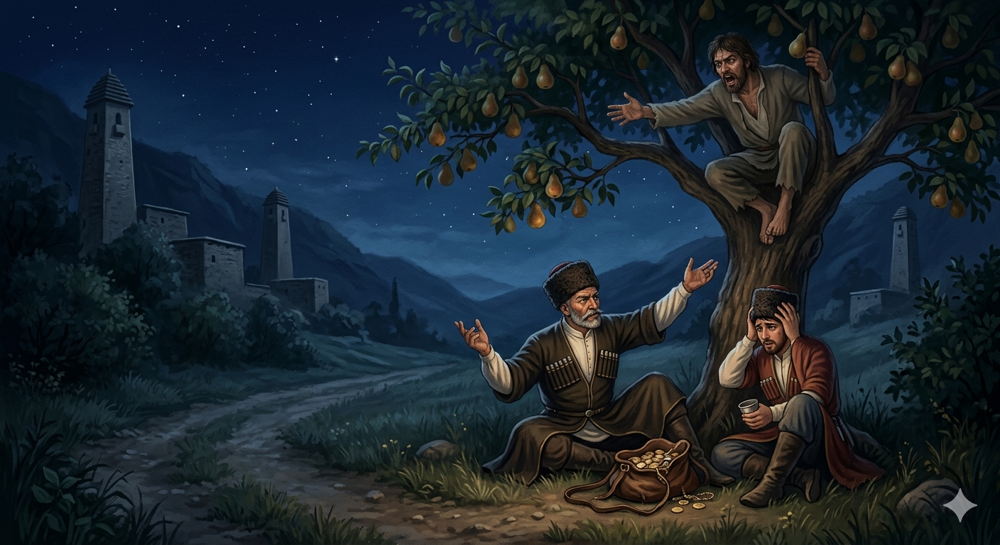

И.А. Дахкильгов. Хьехаме дувцарш - поучительные рассказы-притчи.
И.А. Дахкильгов. Хьехаме дувцарш - поучительные рассказы-притчи. Из ингушского фольклора.

Лакхе вагӀачо дӀанийсадергда ер
Бийсанна цхьанахьара къоалара воагӀаш хинна ши къу цхьа гаьн кӀала сецав, шоаш къал даь йихьа хӀамаш екъа дага болаш. Цу шиннех цаӀ хиннав къоалага Ӏема саг, шоллагӀвар хиннав цу дийнахьа духьашка къоал ваха. ХӀамаш екъаш боахкаш, цу шоллагӀчо аьннад: - Къоал дар доккха къа да ма йоахий. ТӀаккха фу хул вай леладечох? - ДӀавала дӀа, фу къа дувц Ӏа! - аьннад къаьрача къуно, - цу лакхе вагӀачо деррига а дӀанийсадергдар ера-м. ХӀаьта уж къуй Ӏохайна га хиннай кхорий га. Бийсах хьатӀа а ваьнна, цу кхорех важаш воаллаш цхьа миска саг хиннав. Теба вагӀаш къуша дувцачунга ладувгӀаш хиннав из. Лакхе вагӀачо дӀанийсадергда, аьнна, шийна хезача, Ӏочукхайкав из: - Шоай къоалах хулаш дола къа оашош дӀанийсадергда оаш. Сога из нийслург дац, е из нийсдеш вагӀа безам а бац. Со сай мискалах кхораш буаш воал, шун къоалаца са цхьаккха гӀулакх а дац. Ший къа Даллана дӀатӀадехка цхьанне а бокъо яц.
РУССКИЙ
Сидяший наверху все поправит
Ночью двое воров остановились под деревом и решили поделить свою добычу. Один из них был прожженный вор, а второй в этот день впервые пошел на воровство. Начался дележ, и этот, второй, сказал: - Говорят, воровать - большой грех. Что же теперь с нами будет? - Да брось ты, о каких это грехах ты говоришь, - возмутился старший вор и добавил, - сидящий там, наверху, все поправит и наши грехи замолит. Воры сидели под грушей. В потемках, еще до прихода воров, какой-то бедняк залез на нее и объедал плоды. Он слышал все, о чем воры говорили. Но когда до него донеслось: "Сидящий там, наверху, все поправит", он не выдержал и крикнул им сверху: - Грех, который вы взяли на себя, совершив воровство, замолите сами. Я не могу и не хочу этого делать за вас. Я по своей бедности сижу тут и ем эти груши, а до вашего воровства мне нет никакого дела. … Никто не вправе ответственность за свои грехи возлагать на Всевышнего.
ENGLISH
The One Above will sort it all out
One night, two thieves stopped under a tree and decided to divide their haul. One of them was a seasoned thief, whilst the other was stealing for the very first time that day. As they began to divide the spoils, the second one said: 'They say stealing is a great sin. What will become of us now?' 'Come off it, what sins are you talking about?' snapped the more experienced thief, adding, 'The One sitting up there will sort everything out and atone for our sins.' The thieves were sitting under a pear tree. In the gloom, even before the thieves arrived, a poor man had climbed the tree and was eating the fruit. He had heard everything the thieves were saying. But when he heard them say, 'The One sitting up there will sort everything out,' he couldn't hold back any longer and shouted down to them from above: 'You must atone for the sin you have taken upon yourselves by committing this theft. I cannot and will not do it for you. I am sitting here eating these pears because I am poor, and I have no business with your theft.' … No one has the right to shift the responsibility for their sins onto the Almighty.
НОХЧИЙН
ПОГОВОРКИ
Во нах боабе гӀо вай, аьлча, эггар вогӀавар тур ирде хайнав. - Решили на сходе избавиться от плохих людей, и тут самый худший сел точить саблю (чтобы уничтожать плохих).Говза саг, тӀошта из хоавича а, вахаргва. - Умелец (хитрец), хоть посади его на голые камни, выживет.ГӀув чӀоагӀа беттачу къу кховдац. - Вор не идет туда, где засовы крепки.“Далла аьннар хургда”, - яхаш вагӀарах пайда хургбац, гош хьоадеш веце. - Если будешь бездельничать и только уповать на Всевышнего, - пользы не будет.ДӀааьннар кхо да волаш хул, дӀа ца олаш дитар цхьа да волаш хул. - Несказанное принадлежит одному, сказанное – уже троим.Къа тӀа ца лаьцача тол, - ламаз дарах тӀерадалац из. - Лучше не бери грех на душу – молитвами его не замолишь.Къу къуна оакхала водац. - Вор на вора не доносит.Къуна дуне а готта хет. - Вору и мир тесен.Къуна къу вовз. - Вор вора узнает.Къуна тхов – сийна сигале; къуна мотт – Ӏаьржа лаьтта; къуна гӀайба – пхьарса гола; къуна юврагӀа – хьекха мух; къуна совгӀат – наьха наӀалт. - Крыша для вора – синее небо; постель его – черная земля; подушка ему – локоть под головой; одеяло – быстрый ветер; награда ему – проглятие.Къуно къу хоаставу. - Вор вора хвалит.Къуно сатувс беррига нах къоалага баларах. - Вор мечтает, чтобы все пристрастились к воровству.Наьха кхуврча юхе вӀохвала веннар гӀорваьв. - Кто хотел греться у чужого очага, замерз.Цхьаннега хайта дог мехкага хайтад. - Поделился тайной с одним – и она всему миру стала известна.